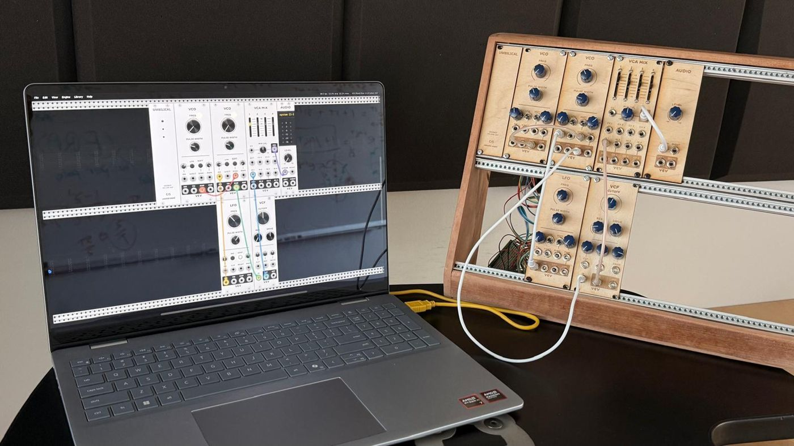
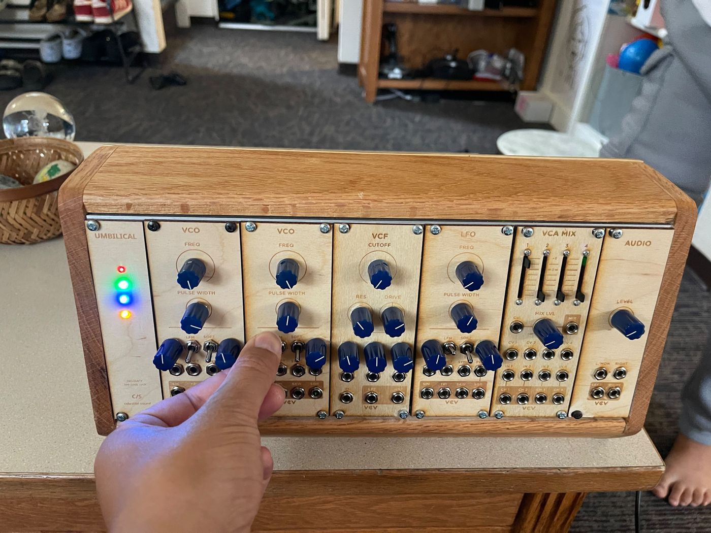
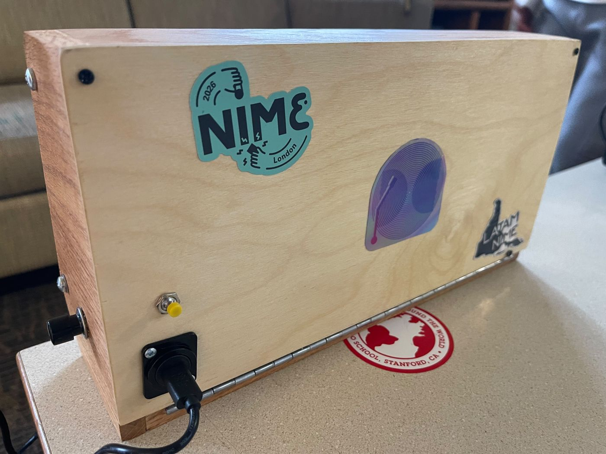
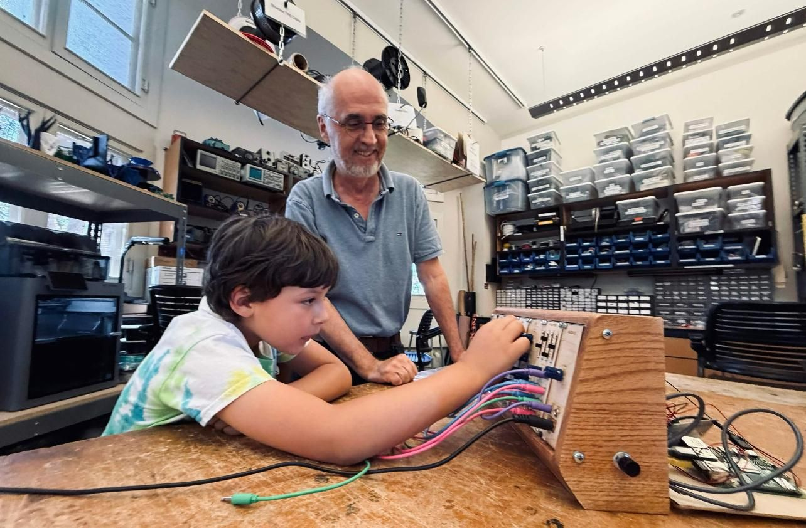

Umbilical
NIME 2026An experimental interface for musical expression exploring the relationship between performer and instrument through a cord-based haptic connection.
Read the NIME 2026 paper (PDF) ↗



